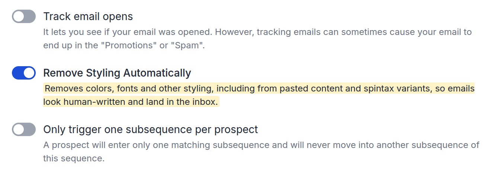
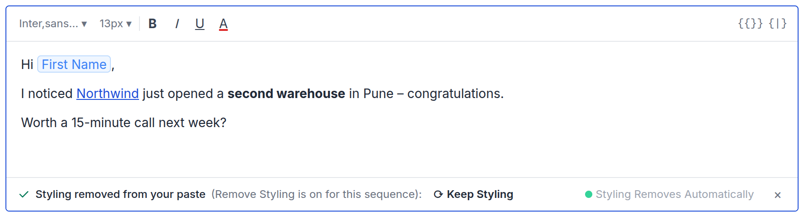
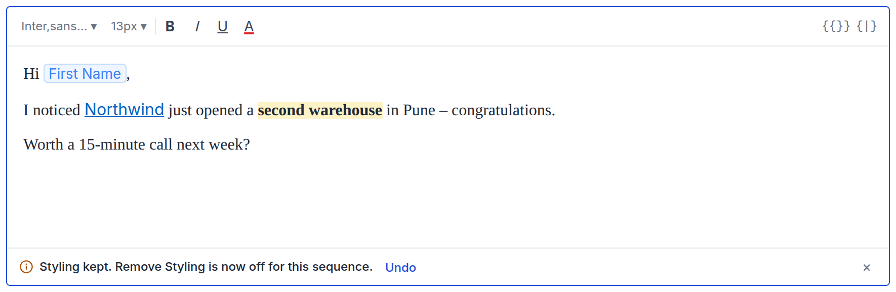
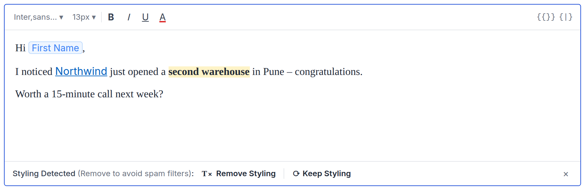
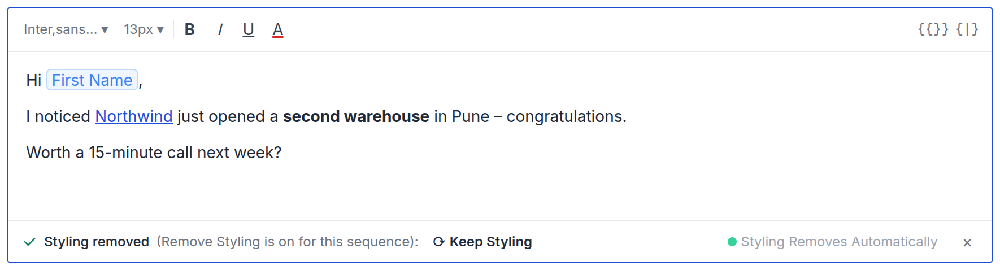
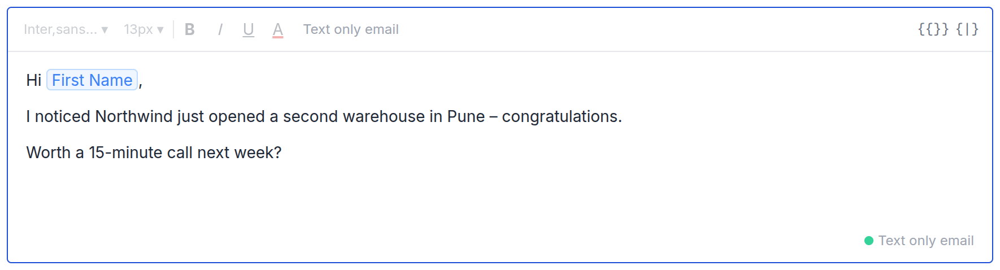
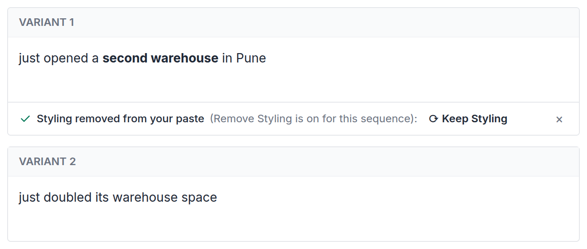
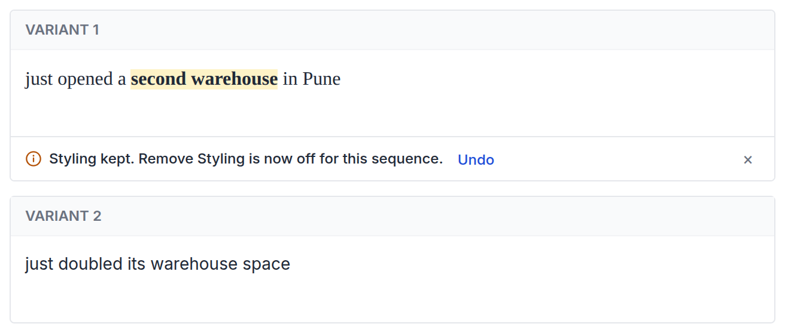

Product Requirements Document
PRD – Pasting styled content: one rule, Remove Styling
Design of record: prototype · Status: Ready for dev review
These prototype elements are review aids, not product UI:
- the Simulate buttons
- the Remove Styling switcher above the editor and in the spintax header
- the side cards on the Safety Settings tab
- the "Same as the editor" / "Differs from editor" label
- the "How this is handled" notes
1
Problem
- Styling from Word goes unnoticed. Pasted Word content brings fonts, colours, sizes and highlights the writer didn't choose. With Remove Styling on, send strips them, so the editor shows something the prospect never gets.
- Tokens arrive broken. Literal
{{First Name}}or{spin}…{endspin}in pasted text can arrive as literal text instead of a chip (escalation). - Keep Styling switches the setting off without saying so. Today, Keep Styling turns Remove Styling off for every email in the sequence, and nothing tells the writer.
2
What we're building
- Remove Styling Automatically (per sequence) is the only rule for styling, at paste and at send. There is no new setting.
- With Remove Styling on, styling is removed as you paste or apply it, and the bar tells you. Keep Styling brings it back and turns Remove Styling off for the sequence. The bar says so, with Undo.
- Literal merge-tag and spintax tokens in a paste become chips.
3
Safety Settings (prototype tab 1)
- Replace the Remove Styling Automatically description with: "Removes colors, fonts and other styling, including from pasted content and spintax variants, so emails look human-written and land in the inbox."
- Everything else stays as it is.

4
Email editor (prototype tab 2)
In this section, "the setting" means the sequence's Remove Styling Automatically. Remove Styling and Keep Styling in bold are the bar's buttons.
| The setting | Styled paste | Toolbar styling |
|---|---|---|
| On | Lands without styling; bar: styling removed | Removed straight away; bar: styling removed |
| Off | Lands as is; bar: Styling Detected | Stays; bar: Styling Detected |
| Text only | Lands as plain text; no bar | Font, size, colour and B/I/U controls disabled |
The bar, by state
| Bar | Copy | Actions |
|---|---|---|
| Styling removed (setting on) | Paste: "✓ Styling removed from your paste (Remove Styling is on for this sequence):" Toolbar: "✓ Styling removed (Remove Styling is on for this sequence):" | Keep Styling · × |
| Styling Detected (setting off) | "Styling Detected (Remove to avoid spam filters):" | Remove Styling · Keep Styling · × |
| After Keep, with the setting on | "ⓘ Styling kept. Remove Styling is now off for this sequence." | Undo · × |
Screens





Actions
- Keep Styling, with the setting on:
- Restores the styling that was removed.
- Turns the setting off for the sequence.
- Shows the "Styling kept" bar. Undo removes the styling again and turns the setting back on.
- Keep Styling, with the setting off: keeps the styling in this email. The setting is unchanged.
- Remove Styling: removes styling from this email. Bold, italic, underline, links and lists stay; fonts, sizes, colours and highlights go. The setting is unchanged.
×: closes the bar. The editor content stays as it is.
Also
- What counts as text only: "Send emails as text only" for all emails, or for step 1 when it is set to first email only.
- The corner badge ("Styling Removes Automatically" / "Text only email") sits in the bar row, just before
×, while a bar is showing. Otherwise it stays in the editor's corner. ⌘⇧V/Ctrl+Shift+Valways pastes plain, with no bar.
5
Spintax editor (prototype tab 3)
- Same as §4 inside each variant field: same bars, same actions, following the sequence's setting.
- Keep Styling in a variant, with the setting on, turns the setting off for the whole sequence, body included. The "Styling kept" bar and Undo appear in that variant.
- Literal tokens pasted into a variant become chips.


6
Acceptance criteria
| ID | Case | Expected | P |
|---|---|---|---|
| A1 | Setting on: paste Word content with font, colour and highlight | Lands without styling (bold and links stay); bar reads "Styling removed from your paste (Remove Styling is on for this sequence)" with Keep Styling | P0 |
| A2 | A1, then Keep Styling | Styling restored. One PATCH /sequences/{id}/settings sets text-only-email to 0; GET /sequences/{id}/config confirms it. "Styling kept" bar shows with Undo; badge disappears |
P0, sign off by name. Owner: TBD |
| A3 | A2, then Undo | Styling removed again; text-only-email back to 1; badge returns |
P0 |
| A4 | Setting off: paste Word content | Lands styled; Styling Detected bar with both buttons | P0 |
| A5 | Setting off: Remove Styling or Keep Styling | Acts on this email only; no settings request | P0 |
| A6 | Setting on: apply a text colour from the toolbar | Colour removed straight away; bar reads "Styling removed (Remove Styling is on for this sequence)" with Keep Styling, which restores the colour and behaves as A2 | P0 |
| A6b | Setting off: apply a text colour from the toolbar | Colour stays; Styling Detected bar with both buttons. Remove Styling removes it with no settings request; Keep Styling acts as A5 | P0 |
| A7 | Text only: paste Word content | Plain; no bar; "Text only email" badge | P0 |
| A8 | Paste plain text | No bar | P0 |
| A9 | Copy and paste within Saleshandy | Chips stay chips; any styling follows A1 or A4 | P0 |
| A10 | Paste literal {{First Name}} or {spin}a\|b{endspin} |
Becomes a chip, in the body and in variants | P0 |
| A11 | ⌘⇧V in any state |
Plain; no bar | P0 |
| A12 | Safety Settings | Remove Styling description reads exactly as in §3; no separate spintax control | P1 |
| A13 | Spintax, setting on: paste into variant 1, then Keep Styling | Variant 1 restored; setting off for the sequence; "Styling kept" bar in variant 1 | P0 |
| A14 | Spintax: keep styling in a variant, save, reopen, send a test | The spin still parses and spins; no literal {spin} in any output |
P0, release blocker |
Open before estimation: A14 depends on the spin parser tolerating styling inside a variant. An open bug says it does not today. Owner: Rajat.
Related: card · webui PR #8129 (reuse its paste sanitiser and token-to-chip handling)